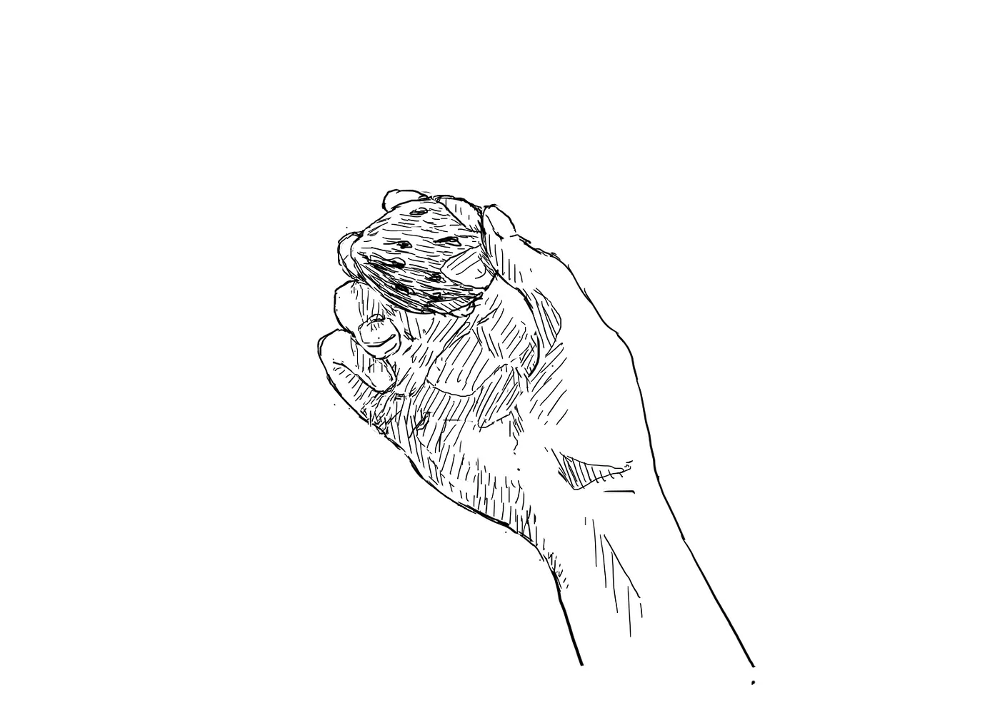
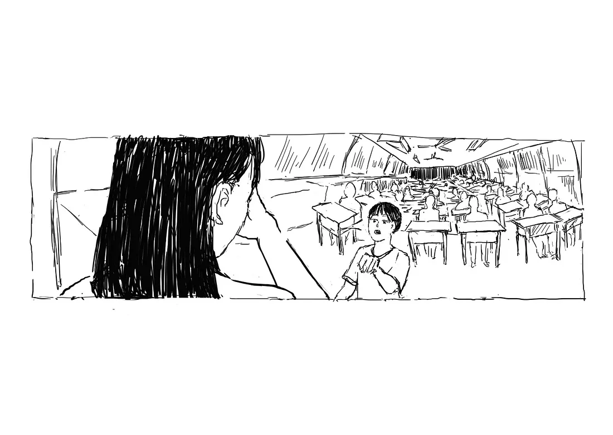
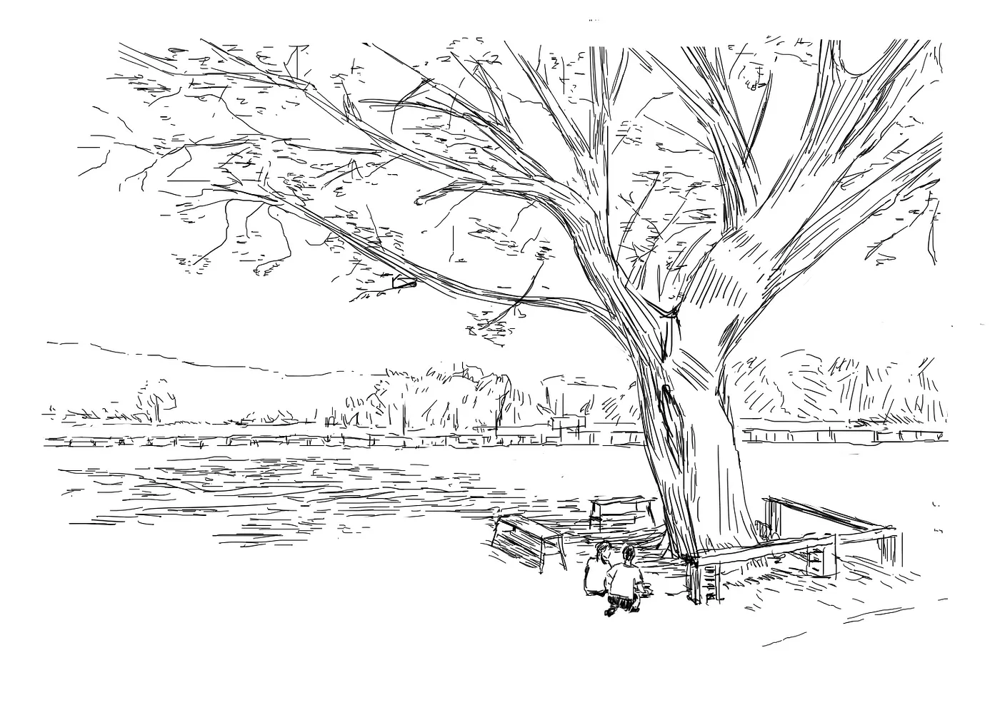

To my family and friends who have participated in my twenty years of life.
「記憶中的那個同學，這幾年已不在人間。」
# 01 草莓事件
那天是 9 / 28，跟許多重要的事一樣都在 28 號。

：欸你看這個草莓好好丟喔！
：它都砸不爛耶！
：老師是不是請假啊？都上課 15 分鐘了。
：欸 12 號，小心不要丟到人！
：好啦！
（班級吵雜）
......
（碰！）
：媽勒 ......
：靠，你砸到國父了！
突然間大家都安靜了下來，圍觀講台前落在地上的相框。
：小心不要踩到碎玻璃，我去拿掃把。
：陳阿臨你完蛋了！
：國父啊，你死的好慘。
：大家借過。
（敲擊黑板聲）
：你們在吵什麼？
：老師有人把國父砸死了。
......
：全部都給我回座位！！到底在幹嘛。
大家愣了一下，回到座位。
：掃地的繼續掃。我真的要被你們氣死，我跟主任談個事情班上就亂成這樣。全班都給我抄第五課課文十遍。
（：十遍？！全班嗎？）
：老師，那個是陳阿臨丟的耶。
：他丟的但你們都沒有阻止，所以大家都有錯。這是團體生活，一個人作亂，大家漠視，所有人都會受到影響。
：啊老師我們那時候不在教室耶？
：都一樣，上課時間，你們不該在外面打球！全都抄，再吵就加倍！
（班級吵雜聲）
下課的時候，我看到班長黃晴跟老師在外面講話。
-
從那之後國父就被收在講台的抽屜中。
國父離開了，而故事開始了。
# 02 班級議會
那些日子，我們充滿著理想，使用著別人的動機。

：在我們國小裡並沒有學生團體能與老師行政權相互制衡，這導致了教師獨裁以及傀儡政府（幹部），他們透過家家酒版的假選舉讓我們感覺到民主。
：但那不是民主，那不是學生自治，那是校方騙我們的技倆，他們認為國小生不該擁有主權。
：大人們不該剝奪我們的權力！我們要反抗他們不理性的態度與規定！擊潰恐龍教師的威脅與言語暴力！反對沒道理的連坐法！爭取我們生而為人的自由！
因此自治班級議會的概念，就這麼產生了。
：請 601 班全體學生到學務處前集合。
：這是誰貼的？
......
：為什麼要貼這些東西在走廊上？
......
：不但沒有申請，還是這種亂七八糟的東西。把學校當自己家了啊！
......
：你們這什麼班級啊。還搞什麼連署。
......
：都已經六年級了，你們做事要照規矩來，要做低年級的榜樣，好好讀書，不要給我帶頭作亂。
......
：把你們那些連署廢紙給我，然後把海報全部撕下來，有沒有問題？
......
（黃晴作勢要舉手）
：我操。雙馬尾留下來，其他回教室。
......
：你，進學務處。
：現在是怎樣？想造反 ... 是 ...
：那些海報 ...... 是大家一起辛苦做 ......
：你給我安靜！我有說你能講話嗎？
：......
：你剛剛是不是故意抓頭？你有什麼問題，你是看不起我是嗎！別以為我不知道你們這些小朋友在玩什麼把戲。媽的。（撕連署書）
（黃晴哭了。）
：再哭啊，做錯事情只知道哭。哭沒辦法解決問題。還不道歉啊。
......
：回教室。出去。
那天，老師讓我跟黃晴交換幹部職位，所以我變成了班長，她變成了副班長。
-
班上都知道，黃晴為著班級議會做了很多；大家也都看見了，她回班上遮著臉啜泣的樣子。
-
當時的我看著抽屜裡碎裂的國父，腦袋裡浮現出了「兩個字」。
# 03 時代隔閡
她很真誠的講了一段，那時我無法理解的話。
：真的要這樣做嗎？
：......
：嗯？
：......
：你怎麼了？
：我喜歡像這樣握住掌心的空氣，告訴自己 ...... 我並不能真正抓住什麼 ......
：......
：但我擁有此時此刻。
（細雨聲）
：我以為你在用雨洗手。
：開始吧。
（喧鬧的教室）
「不溝通，不開門！」
「不溝通，不開門！」
「不溝通，不開門！」
：機動組！用桌子擋好門！
（：一二三！）
（：開始直播囉！）
：601 的同學們，今天，我們受夠了學校無理的規定！我們受夠了他們語言的暴力！今天，是學生權實現的一天，我們要一起擊潰體制的壓迫！今天不會再有同學哭了！
：也許大人們能限制我們的行為，懲處我們，但他們不能以此剝奪我們思想、抹滅我們胸口的炙熱。我們要奪回我們該有的，哪怕這將導致我們失去現有的和平假象。
：但我們和他們不一樣！雖然說「不溝通不開門！」，但只要老師與校方願意坐下來，與我們好好溝通，我們會馬上復原教室以及課程。我們跟大人一樣值得被尊重，我們不需要連坐罰、不該被大吼大叫侮辱，我們需要的是理性溝通！
33 分鐘的圍城，與老師主任有了多次的交涉。
起初，他們態度非常惡劣想盡方法破門而入，還拿記過威脅我們，但當他們看見我們在開直播時，他們開始思考溝通的可能性。
班導出面與我交涉，她答應我們從班會的形式開始發展班級議會，並希望能建立起與班上同學溝通的管道，不要以這麼極端的方法使得課無法進行。
事後我們恢復了教室，而這件大事也在我們學校裡廣為流傳。就差沒有被新聞報導出來而已。
-
這個事件使得那時的我們充滿著熱情，每天放學留下來討論彼此對班級議會的想像，我們甚至在一本筆記本寫了組織章程。
第一次班會那天我是會議主席，大家都到齊了，老師拿了一張同學的木椅坐在前面。
：班級的混亂是我們共同的責任。我們班為什麼會這麼亂，大家把自己認為的原因寫在紙上，匿名喔。老師也請你寫寫看。
老師她沒有動筆。
-
：大家把紙條收到這個盒子裡喔，我們等等可以一起討論。
這時候老師突然把盒子搶走。
：老師？你要幹嘛？
她翻出我寫的那張紙條。

老師凝視著那張紙條，然後在大家面前哭了。
她很真誠的講了一段，那時我無法理解的話。
並匆匆離開了教室。
從那之後，一直到畢業她都沒有再提過那天的事情。
跟心中的不解一樣，我們議會也被懸在那，始終沒有個結論。
# 04 親愛的大哥哥
我總是無法得知你在規畫些什麼。
親愛的大哥哥，
我不知道該如何述說這幾天發生的總總。我有好多自己的想法，可是會不會其實大家根本都沒有理解我。雖然後來我也寫信跟老師道歉，然後也沒被記過，但 ... 到現在班上也沒有更好、班級議會也沒有下文。準備了這麼久，做了這麼多功課，我做這些 ... 搞得班上好混亂。我曾經聽聞過你的所作所為，今天我想要真實的經歷你。
「民主的出現不是為了混亂，乃是要使人民能自由，而且能更加進步。」
親愛的大哥哥，
我一直覺得這樣的溝通模式很奇怪，你常常答非所問，卻有著說不上來主觀的安慰感。我希望能更了解你。我不想成為空有理想的傻子，我想要成為大家的祝福，如同你為我起的名一樣。也許我現在看不清楚將來劇情的走向，但我相信你不會放棄我。話說好像這幾天是這本書的初版印刷，祝你印刷快樂。也謝謝你為我做的一切。
「在我為你準備的領域，成為這個世代年輕人的領袖吧。不要從畫面中墜落了。」
# 05 給二十歲的信
我沒辦法想像，你卻看得清所有。

（蟬叫聲）
畢業的那天，我們在那棵樹下寫給未來自己的信。
並將它們埋在一個我們都會忘記的位置。
：嗨，二十歲時的自己，你最近過得好嗎？在忙些什麼我一直很期待的事嗎？十二歲的我沒辦法想像，你會在哪裡，做著怎樣的事，但你應該看清了我現在所有的疑惑。我希望你仍然保有對世界的熱情、大步的邁向屬於自己的那個領域，就跟大哥哥說的一樣；我希望能你能投票，選出能為社會帶來安定的總統；我希望你成為眾人的祝福，就和你的名字一樣 ......
（：不知道那時候黃晴還有沒有跟你待在一起。）
：嘿，你都寫了些什麼？
：秘密。
：畢業快樂。
：能跟你握個手嗎？
（蟬叫聲）
# 06 【20】
「我可以不要再挖了，裡面不會有我想要的東西。」
（蟬叫聲）
「直到今天我還是會夢見，那些場景。」
「在模糊的光影裡，有你，有我，還有著天真的大家。」
「但那記憶中的同學，這幾年已不在人間。」
「我們自己的故事，時間的方向固定且非線性。有著被限制的因果關係。對於這樣的系統，過去的自己都會在人生區間內死於時代隔閡。」
烏鴉先生 2020 年 12 月
線上閱讀版後記
在2022的10月，我在台創祭看到了森森 (IG:
@sen_1103
) 的「大夢初醒」，其中講述了她面對腫瘤的心路歷程，我被她故事深深感動。後來也用訊息和她稍微聊了一下，她談到作品對人的影響力，也是為此她拋開顧慮公開了作品。
2020 年我完成了這個半自傳的作品，由於內容多半是真的，我就只印了 20 本，給我陪伴我成長、知道這些故事或認識我的 20 個人。
雖然我的作品沒有像森森的這麼偉大，或能像她一樣直接影響一些人，但也許一些感觸還是能分享，一些情節還是能同理，或多或少。
隨著開始將自己當作「創作者」後，我一路上也認識了很多人，也被許多作品感動，我也期許自己的作品也能像他們一樣。
放了兩年，我沒有把這個作品當作黑歷史，反而因著這個作品，我更確立了創作對我自己的意義。因為我已經將作品裡所探討的種種安頓好了，不論是權威、群體、隔閡、童心、愛情、夢想、信仰等等，創作時也許摻雜了很多逃避或當時無法承擔的情緒，不過現在都釐清了許多。
畢竟該埋的東西我也好好埋好了，該帶走的都放進口袋了，兩年後的今天，我同時準備下個階段的作品（不論是學術、藝術），也始得整理以前的種種。
【20】插畫集紙本作品就不會再版了，就單純給這 20 人典藏。線上版的目的是跟還在過程中的人分享、也是向後來認識我的自我介紹。
跟主題一樣，20 歲的我也不會知道現在我能看懂他的處境。此時，我也嘗試去相信未來的自己，以此安頓現在的自己，總有一天，他能看懂這一切，並承擔這些。
不是大人的錯，也不是天真的錯，隔閡是因為我們承擔了更多，許願是因為我們能溫柔的接納過去。
烏鴉先生 2020 年 10 月